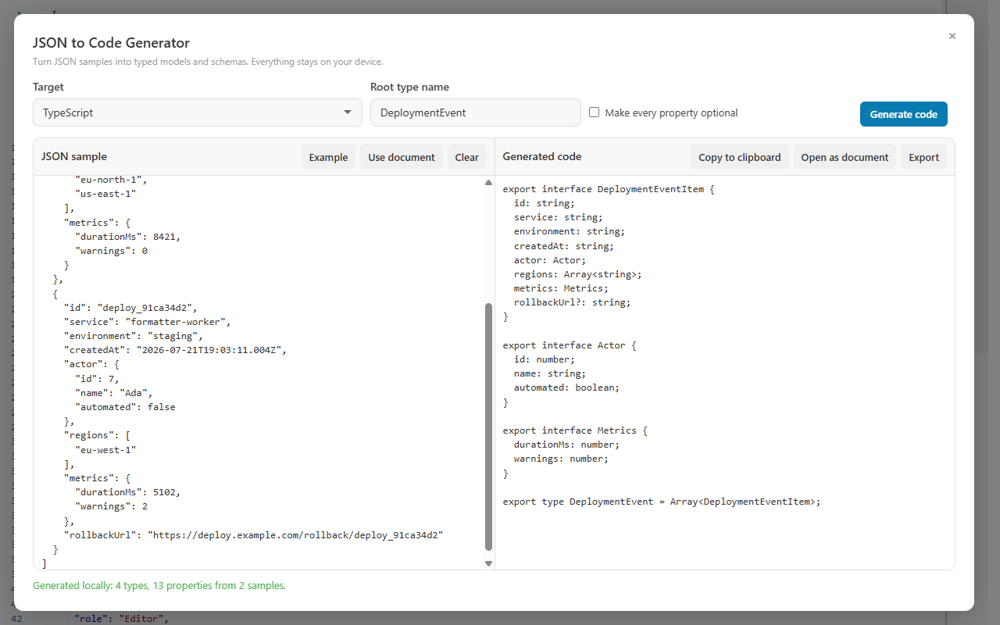
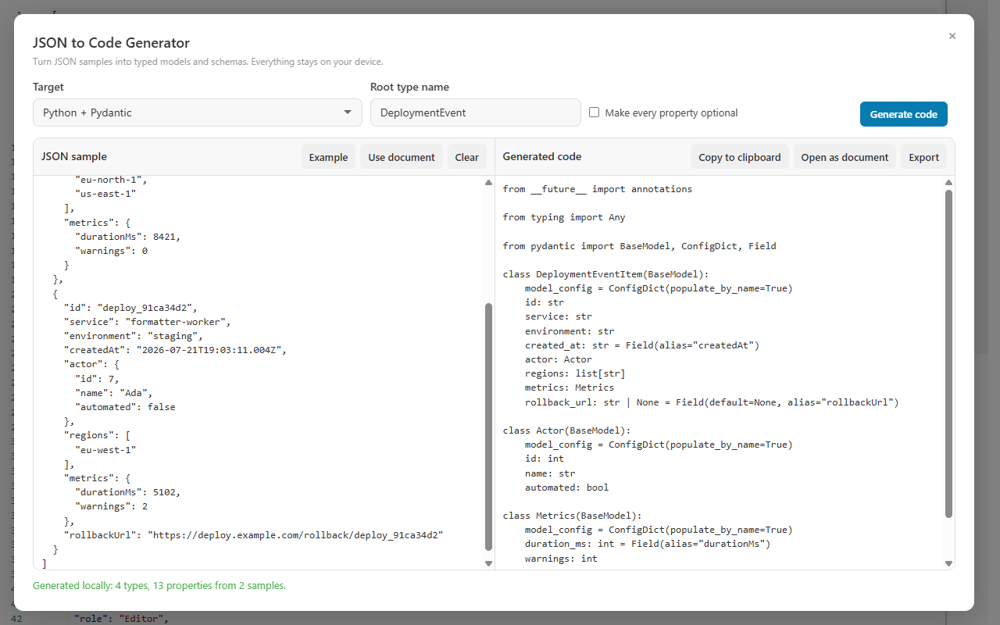

Load the sample
Start with the current JSON document, paste another sample, or combine several examples in an array.
Paste one or more representative JSON values, choose a target, and generate nested models locally. Review inferred optional fields and mixed types, then copy, export, or open the generated result as a new document.

The quality of an inferred model depends on the samples. Give the generator enough real variation to distinguish required fields, optional fields, arrays, nested objects, integers, decimals, booleans, and nulls.
Start with the current JSON document, paste another sample, or combine several examples in an array.
Set the root type name, select a language or JSON Schema, and optionally make every property optional.
Inspect the generation summary, copy the output, export it with the correct extension, or open it in CodePrettify.
The second deployment contains rollbackUrl while the first does not. That variation gives the generator evidence that the property should be optional.
Nested objects, arrays, timestamps, integers, booleans, and one conditionally present field.
[
{
"id": "deploy_7fb8c0e3",
"service": "api-gateway",
"actor": { "id": 42, "automated": true },
"regions": ["eu-north-1"],
"metrics": { "durationMs": 8421, "warnings": 0 }
},
{
"id": "deploy_91ca34d2",
"service": "formatter-worker",
"rollbackUrl": "https://deploy.example/rollback/91ca"
}
]Property names and nested shapes stay tied to the JSON while generated types use the selected language conventions.
export interface DeploymentEventItem {
id: string;
service: string;
actor: Actor;
regions: string[];
metrics: Metrics;
rollbackUrl?: string;
}
export type DeploymentEvent =
DeploymentEventItem[];The same inference model drives every output target. That makes it easy to compare how TypeScript, validation schemas, backend models, systems languages, and mobile types express the same data.

BaseModel, aliases JSON property names, and exposes optional values.A property missing from any object sample becomes optional. You can also force every generated property to be optional.
Whole and fractional values inform integer or number types. Null participates in a nullable or union type instead of being discarded.
Repeated object shapes become named definitions so generated output is easier to read and maintain.
Language-specific reserved words and invalid identifiers are renamed or represented through aliases where the target supports them.
When samples disagree, the generator uses a compatible union or general type rather than pretending every value has one shape.
Input size, output size, depth, and inspected values are capped so a pathological sample cannot lock the interface indefinitely.
The JSON sample is not sent to an inference API. This is deterministic model generation performed by the installed CodePrettify runtime.
It is a strong starting point inferred from the samples you provide. Review naming, domain constraints, validation rules, serialization settings, and optionality before treating it as a finished contract.
Yes. Choose “Use document” in the generator to load the current JSON without copying it manually.
Use an array containing several representative objects, including examples where conditionally present fields are absent.
Generate JSON Schema, open or copy it, then use CodePrettify’s JSON Schema Validator against the original document.
Open a JSON payload, generate the target model locally, and keep the source and result inside the same developer workspace.